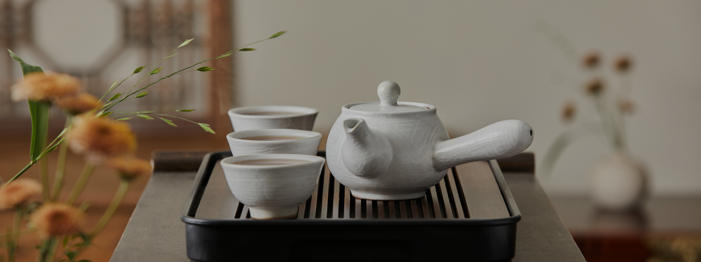
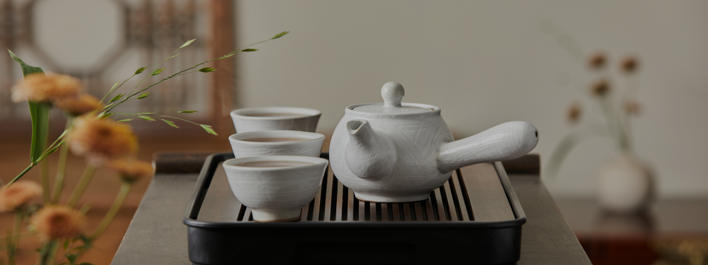
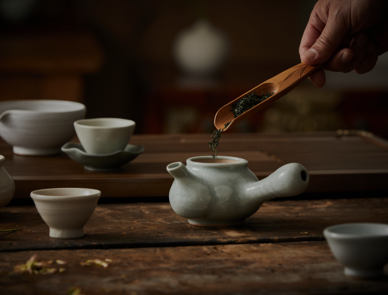
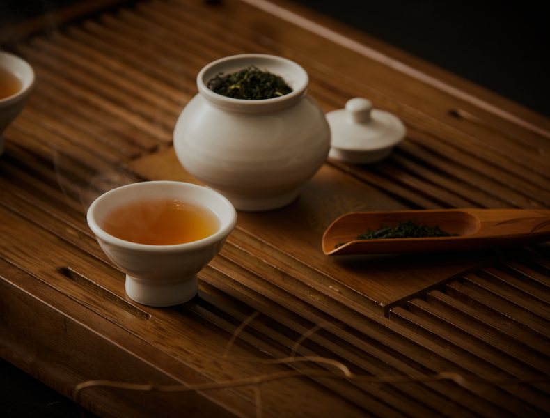

Approaching
Tea with Reverence
 

In the midst of a fast-paced and complex world, would you like to explore the aesthetics of slowness?
Experience Korean tea culture through "Dado" and "Darye," which are rooted in the spirits of our ancestors, who sought to find relaxation for their bodies and minds.
-

Cultivating the Mind
and Body Through "Dado""Dado" is defined as the practice of cultivating the body and mind through the entire process of picking tea leaves, manufacturing tea, and brewing and drinking it.
It involves kindling a fire, boiling water, brewing tea in well-boiled water, serving tea to guests, and engaging in conversations. Amid a world that's rapidly changing, try to heal your weary body and mind at a slower pace.
-

Learning the Etiquette of Tea
through "Darye""Darye" encompasses the etiquette and rituals observed when dealing with tea, especially when it comes to drinking tea. In Korean history, it is documented that "Darye" was practiced during various royal ceremonies, underscoring the importance of the mindset when handling tea. The teaware used when drinking tea in Korea also reflects the spirit of "Darye."